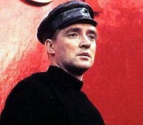
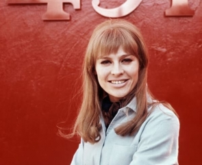

Fahrenheit 451 Characters
Here are three important characters from the book. (Pictures acqcuired from the from the 1966 film adaption)
-

- Guy Montag is a fictional character and the protagonist in Ray Bradbury's dystopian novel Fahrenheit 451.
- Clarisse McClellan is a young girl one month short of her 17th birthday who is Montag's neighbor. 
- Mildred "Millie" Montag is Guy Montag's wife. She is addicted to sleeping pills, absorbed in the shallow dramas played on her "parlor walls" (flat-panel televisions), and indifferent to the oppressive society around her.